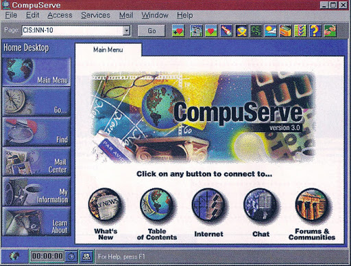

-
En avril 1970, DEC lance sa gamme de PDP-11, (Programmable Data Processor). C’est un mini-ordinateur équipé d’un processeur 16 bits, d’une mémoire centrale à tores de ferrite, 4 ou 8 Ko extensibles à 56 Ko. Le PDP-11 de DEC a inspiré le « langage C » et le système « Unix ».
×Source : Hackaday.com
Inventions
Ces ordinateurs ont un système doté d’un éditeur-assembleur-débuggeur, une architecture UNIBUS (ce sont des périphériques branchés sur un bus système unique pouvant transférer des données sans intervention du processeur), et un lecteur de bande de papier. La modularité de ces mini-ordinateurs en a fait des machines appréciées aussi bien dans les cabinets comptables que dans le monde universitaire.
-
17 novembre 1970 : Engelbart dépose un brevet (n°3.541.541), décrivant "un indicateur de position X-Y pour un écran".
×Source :
Inventions
Il s’agit du brevet pour l’invention de la souris, qu’il revendra au MIT pour la somme de 10 000 dollars
-
Le 4004 d'Intel est le premier microprocesseur commercialisé, c'est-à-dire la première intégration réussie de toutes les fonctions d'un processeur sur un seul et unique circuit intégré. Il est d'abord produit en exclusivité pour l'industriel qui a commandité son développement, Busicom, en mars 1971. Après avoir fait lever la clause d'exclusivité, Intel annonce sa commercialisation le 15 novembre 1971.
×
Source : Wikipédia
Inventions
Le 4004 a été conçu par deux ingénieurs d'Intel : Marcian Hoff, qui mit son architecture au point en 1969, et Federico Faggin, l'unique designer de puce du projet MCS-4. Faggin avait une expérience de la conception de transistor MOSFET sur silicium, et notamment de la nouvelle technique dite de « self-aligned gates », qu'il avait mise au point à Fairchild Semiconductor en 1968. Ce dernier a dirigé avec succès le projet MCS-4 en 1970-1971. Au moment de l’invention du microprocesseur les ingénieurs savaient concevoir l'architecture d'un microprocesseur et en définir la logique, mais personne n’était encore en mesure d'en réaliser un sur une puce unique de silicium.
-
Ray Tomlinson invente la messagerie électronique et envoie le premier courriel sur ARPAnet.
×Source : arobase.org
Inventions
Pour ce faire il conçoit deux boîtes aux lettres sur deux ordinateurs grâce auxquelles il parvient à s'envoyer ce premier mail.
-
François Gernelle de la société R2E présente en janvier 1973 le Micral, premier micro-ordinateur.
×Source : Site historique
Inventions
Le tout premier modèle de cette gamme, nommé « Micral », possède la caractéristique d'être basé sur un microprocesseur et d'avoir des dimensions réduites. Il est ainsi reconnu comme étant le premier micro-ordinateur de l'histoire. Vendu approximativement 750 $.
-
Apparition de Visicalc, première « killer application » sur l'Apple II.
×
Source : wikipedia
Inventions
VisiCalc fut le premier logiciel tableur destiné à un ordinateur individuel, l'Apple II. C'est très certainement l'exemple même d'une killer app qui fit du micro-ordinateur (qui était jusque-là un hobby réservé aux programmeurs) un véritable outil destiné à des applications comptables et commerciales.
-
CompuServe propose le premier service de courrier électronique grand public.
× Source : Astrosurf
Inventions
En 1979, CompuServe est la première entreprise à proposer un service de courrier électronique et du support technique en ligne. En 1980, elle est la première à proposer la messagerie instantanée sous le nom de CB Simulator
-
Invention du Compact Disc (CD).
×Source : --
Inventions
L'invention du disque compact audio (CD), découle directement des travaux effectués sur le video-disque, support destiné au stockage du son et de l'image. En 1976, deux ingénieurs de chez Philips ont eu pour mission de développer un disque audio dont la lecture devait être calquée sur celle des médias (utilisant donc un faisceau laser, la lentille). En parallèle, une compagnie japonaise, Sony, travaillait sur le passage du son d'un format analogique à un format digital (ou numérique), c'est-à-dire transcrit en code binaire, sous forme de 0 et de 1. En 1978 et 1980, les deux entreprises présentent chacune un prototype de lecteur de CD basé sur cette technologie: c'est le tournant de l'histoire. A partir de cette date, les deux firmes décident de passer un accord afin de développer un support universel en commun, chacun y amenant sa compétence. Philips apportera le support et la lentille nécessaire à la lecture et Sony ses connaissance en matière de format audio numérique.
-
Création du premier lecteur de disquettes universel.
×
Source : Generation NT
Inventions
Il permet de lire des disquettes sur n'importe quel ordinateur, il est vendu au prix de 2 699 Francs, Il permet aussi de protéger les créateurs de logiciels de se protéger des pirates.
-
Création du langage C++, c'est un langage de programmation compilé permettant la programmation sous de multiples paradigmes (comme la programmation procédurale, orientée objet ou générique).
×
Source : or-formation
Inventions
Ses bonnes performances, et sa compatibilité avec le C en font un des langages de programmation les plus utilisés dans les applications où la performance est critique.
-
Premier nom de domaine
×
Source : Notice web
Inventions
Le premier nom de domaine enregistré sur Internet est « symbolics.com ». Il a été enregistré le 15 mars 1985 par la société Symbolics, fabricant d’ordinateurs et aujourd’hui disparue.
-
Invention de « World Wide Web » abrégé www.
×
Source : CERN
Inventions
Il a été conçu et développé pour que des scientifiques travaillant dans des universités et instituts du monde entier puissent s'échanger des informations instantanément.
-
BeOS est un système d'exploitation développé par la société américaine Be Inc.
×Source : wikipedia
Inventions
Be Inc a été fondée en 1991 par le français Jean-Louis Gassée, un ex-dirigeant d'Apple1. Initialement conçu pour un ordinateur spécifique, la BeBox, il a d'abord été adapté au Macintosh, puis au PC en 1998.
-
Linux : Premier noyau linux 0.01
×Source : wikipedia
Inventions
Le noyau Linux est un noyau de système d'exploitation de type UNIX. Il est utilisé dans plusieurs systèmes d'exploitation dont notamment GNU/Linux (couramment appelé « Linux ») et Android. Le noyau Linux est un logiciel partiellement libre (contenant des BLOB et des modules non-libre - consultez Linux-libre) développé essentiellement en langage C par des milliers de bénévoles et salariés collaborant sur Internet. Le noyau est le cœur du système, c'est lui qui s'occupe de fournir aux logiciels une interface de programmation pour utiliser le matériel. Le noyau Linux a été créé en 1991 par Linus Torvalds pour les compatibles PC.
-
Création du Bitcoin, par le biais de Tor, le bitcoin va devenir la cryptomonnaie utilisable sur le deep et darkweb. Une véritable économie parallèle.
×Source : Blog Du Moderateur
Inventions
Pour créer et gérer les bitcoins, Bitcoin s'appuie sur un logiciel. Dans ce logiciel, les bitcoins sont créés conformément à un protocole qui rétribue les agents (appelés « mineurs ») qui ont traité des transactions. Ces agents mettent à contribution leur puissance de calcul informatique afin de vérifier, de sécuriser et d'inscrire les transactions dans un registre virtuel, appelé la blockchain, en français chaîne de blocs, nom qui vient du fait que l'entité de base de Bitcoin s'appelle un bloc, et que les blocs sont ensuite reliés en une chaîne, la chaine de blocs. Pour chaque nouveau bloc accepté, l'activité de vérification-sécurisation-enregistrement, appelée minage, est rémunérée par des bitcoins nouvellement créés et par les frais des transactions traitées. En tant que monnaie ou commodité, les bitcoins peuvent être échangés contre d'autres monnaies ou commodités, biens ou services. Le taux d'échange de la cryptomonnaie est fixé sur des places de marché spécialisées et fluctue selon la loi de l'offre et de la demande.
-
Développement de l'informatique en nuage ou Cloud computing. Le cloud computing correspond à l’accès à des services informatiques (serveurs, stockage, mise en réseau, logiciels) via Internet (le « cloud » ou « nuage ») à partir d’un fournisseur.
×Source : Spiria
Invention
Les principaux services proposés en cloud computing sont le SaaS (Software as a Service), le PaaS (Platform as a Service) et le IaaS (Infrastructure as a Service) ou le MBaaS (Mobile Backend as a Service). Généralement sur trois niveaux :
— Le cloud public — accessible par Internet
— Le cloud d'entreprise ou privé — accessible uniquement sur un réseau privé
— Le cloud intermédiaire ou hybride — qui est un mix entre le cloud public et le cloud privé.
Les grandes entreprises du secteur des technologies de l'information et des télécoms développent massivement le cloud computing, allant des services nuagiques cités ci-dessus à la location de logiciel (application de téléphonie mobile, logiciels de bureautique, de dessin, publication, etc.), mais aussi de contenu, comme la vidéo à la demande (VAD). Les technologies du cloud computing ont permis la mise au point de solutions de mégadonnées et de l'informatique ubiquitaire. L'internet des objets (IdO) et la 5G s'appuient sur des infrastructures nuagiques.